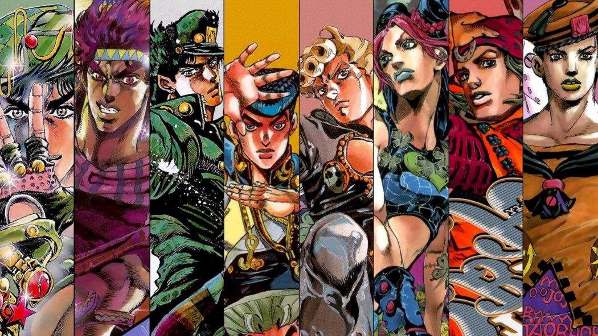

Conheça mais sobre a história de Jojo's Bizarre adventure, ou ...
História
Criador
Hirohiko Araki (Araki Hirohiko, nascido em 7 de julho de 1960 em Sendai, Miyagi) é um mangaká e o criador de JoJo's Bizarre Adventure, a base deste site. Ele fez sua estreia no mundo dos mangás em 1980 sob o pseudônimo de Toshiyuki Araki com seu one-shot Poker Under Arms, iniciando sua carreira profissional com os mangás curtos Cool Shock B.T., Baoh e Gorgeous Irene. Seu trabalho em JoJo's Bizarre Adventure está dividido em várias partes e continua sendo publicado há mais de 30 anos, totalizando 131 volumes (até setembro de 2021) e vendendo mais de 120 milhões de cópias.


Inspirações
Hirohiko Araki, criador do famoso Jojo’s Bizarre Adventure, mangá que atualmente exerce grande influência no universo artístico e na moda, incorporou uma variedade de referências antigas e contemporâneas ao desenvolver seus personagens. Araki já mencionou que sua principal fonte de inspiração para as expressões faciais e poses dos personagens de JoJo provém do anime dos anos 80, Fist of the North Star, de Tetsuo Hara, e das obras de Michelangelo. Além disso, diversos personagens ao longo de sua obra são homenagens a bandas musicais, como o exemplo da Queen.
Enredo
O mangá narra a saga da família Joestar e suas batalhas contra forças sobrenaturais. Ele está dividido em 9 partes, e em cada uma delas, o mais recente primogênito dos Joestar, geralmente apelidado de JoJo, é destinado a seguir as tradições familiares, "cumprindo seu destino" ao se envolver ativamente no combate contra presenças místicas e fenômenos que assombram a família ao longo dos séculos. Cada parte do mangá apresenta protagonistas distintos e se desenrola em períodos específicos ao longo da narrativa. Com o lançamento de The JOJOLands, o número total de protagonistas chega a nove.
Temporadas

Phantom Blood
A primeira parte, Phantom Blood, tem como cenário a Inglaterra em 1880, acompanhando a jornada de amadurecimento de Jonathan Joestar. Ele eventualmente confronta seu irmão adotivo, o astuto e impiedoso Dio Brando, que se transforma em um vampiro com a ajuda de uma antiga máscara de pedra. Jonathan recebe treinamento de Will Anthonio Zeppeli na arte do Hamon, uma energia vibrante manipulada no corpo humano e transferida através de combate corpo a corpo. Essa habilidade é o único meio seguro, além da luz do sol, para derrotar vampiros e seus zumbis.
Battle Tendency
A segunda parte, Battle Tendency, acompanha Joseph Joestar, neto de Jonathan, enquanto ele viaja pelo mundo nos dias que antecedem a Segunda Guerra Mundial em 1938, enfrentando os Homens do Pilar. Essa antiga raça de seres hostis é responsável pela criação da Máscara de Pedra. Assim como seu avô, Joseph passa por um treinamento rigoroso em Hamon, desta vez ao lado de César Anthonio Zeppeli, neto de Will, sob a supervisão da misteriosa Lisa Lisa. Seu objetivo é proteger a Pedra Vermelha de Aja, uma joia cobiçada pelos Homens do Pilar para completar a Máscara de Pedra e obter imunidade à luz do sol. lor
Stardust Crusaders
A terceira parte, Stardust Crusaders, se desenrola nos anos de 1988-1989, quando Jotaro Kujo, neto de Joseph, embarca em uma jornada com Joseph, Muhammad Avdol, Noriaki Kakyoin, Jean Pierre Polnareff e Iggy de Tóquio até o Cairo. O objetivo é enfrentar DIO, que ressurgiu das profundezas do mar, e salvar a mãe de Jotaro da influência mística de DIO.
Diamond Is Unbreakable
A quarta parte, Diamond is Unbreakable, se desenrola na cidade fictícia de Morioh, no Japão, em 1999. A história segue Josuke Higashikata, filho ilegítimo de Joseph, enquanto ele interage com amigos e inimigos que possuem Stand, uma habilidade concedida pelo Arco e Flecha. Esses objetos foram usados por DIO para conceder Stands a outros. Josuke, juntamente com Okuyasu Nijimura, Koichi Hirose, Jotaro Kujo e Rohan Kishibe, embarca em uma busca para capturar o assassino em série Yoshikage Kira.

Golden Wind
Na quinta parte, Vento Aureo, cujo cenário é a Itália em 2001, Giorno Giovanna, filho de DIO, enfrenta desafios para ascender ao topo da Passione, a gangue mais poderosa do país. Seu objetivo é derrubar o misterioso chefe da gangue e impedir o tráfico de drogas que prejudica a população civil. Giorno trabalha em conjunto com Bruno Bucciarati, um membro da gangue, e sua própria equipe composta por Leone Abbacchio, Guido Mista, Narancia Ghirga e Pannacotta Fugo. Eles têm a responsabilidade de proteger Trish Una, filha do chefe, das equipes assassinas La Squadra Esecuzioni e Unità Speciale.

Stone Ocean
A sexta parte, Stone Ocean, ocorre em 2011, quando Jolyne Cujoh, filha de Jotaro, é acusada de assassinato e detida na Prisão Green Dolphin Street. Após uma tentativa de libertar Jolyne, Jotaro tem suas memórias e Stand roubados pelo Stand Whitesnake. Diante dessa situação, Jolyne decide permanecer na prisão para desvendar a identidade do usuário de Whitesnake e descobrir os planos relacionados às memórias de Jotaro e seu Stand. Ao longo da jornada, Jolyne conta com aliados como Emporio Alnino, Ermes Costello, Foo Fighters, Narciso Anasui e Weather Report.

Steel Ball Run
Situado em 1890 nos Estados Unidos, Steel Ball Run narra uma corrida que atravessa todo o continente norte-americano, conhecida como a corrida de cavalos Steel Ball Run, nomeada após seu patrocinador, Steven Steel. Os protagonistas são Gyro Zeppeli, um mestre da técnica única de Spin que busca o prêmio em dinheiro, e Johnny Joestar, um ex-jóquei paraplégico que almeja curar suas pernas por meio do Spin. Ambos colaboram para vencer a corrida. Ao longo da trama, Johnny e Gyro descobrem que a corrida serve como um disfarce para os verdadeiros planos do Presidente Funny Valentine, que procura encontrar as poderosas e valiosas relíquias de Jesus Cristo. Eventualmente, eles também embarcam na busca por essas relíquias enquanto se defendem dos numerosos agentes de Valentine.
JoJolion
Em JoJolion, que se passa em 2011, Yasuho Hirose, uma estudante universitária, encontra um homem com amnésia chamado "Josuke" em Morioh após o Grande Terremoto do Leste do Japão (acontecido na época). Juntos, eles decidem investigar a identidade passada de Josuke, inicialmente pensando ser a de um médico de navio chamado Yoshikage Kira, e as circunstâncias que o trouxeram para a cidade. Enquanto fazem isso, deixam Josuke sob os cuidados da abastada Família Higashikata. Durante a investigação, eles descobrem os segredos mais sombrios da família Higashikata, incluindo o envolvimento em um comércio de drogas que envolve uma raça misteriosa de seres humanóides e uma fruta igualmente enigmática.

Jojolands
A história se desenrola no Havaí. O próprio protagonista, Jodio Joestar, introduz sua narrativa como a saga de como ele planeja ficar rico, sendo visto em um barco observando uma erupção vulcânica. O enredo tem início em uma estrada em O'ahu, quando dois agentes da lei param uma caminhonete para uma verificação de rotina. Poucos capítulos foram lançados até agora, sendo essa a história até então contada.
O jogo
Jojo the ultimate battle
Jogo criado por nós desenvolvedores, sendo apenas um fan-game, inspirado pelos jogos de luta do Jojo, como o All stars battle r.
Controle o personagem com WASD e ataque com o espaço.
Sobre
Informações
Jojo bizarre adventures é um mangá japonês escrito e ilustrado por Hirohiko Araki. O mangá foi publicado pela Shueisha em sua revista Weekly Shōnen Jump entre 1987 e 2004, e a partir de 2004 pela revista seinen Ultra Jump.
Dessa forma, esta página é apenas uma forma de divertida de falar mais sobre Jojo e apresentar um fan-game que criamos.